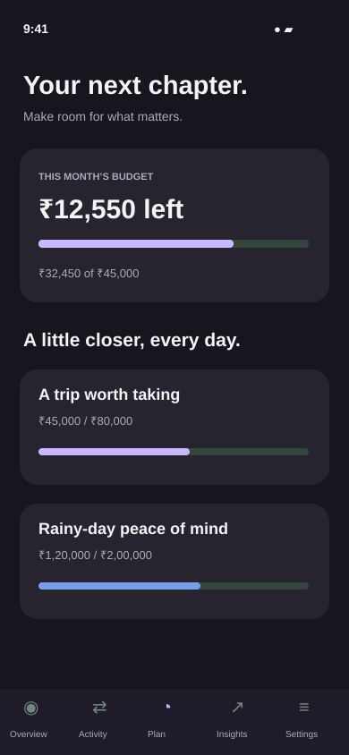
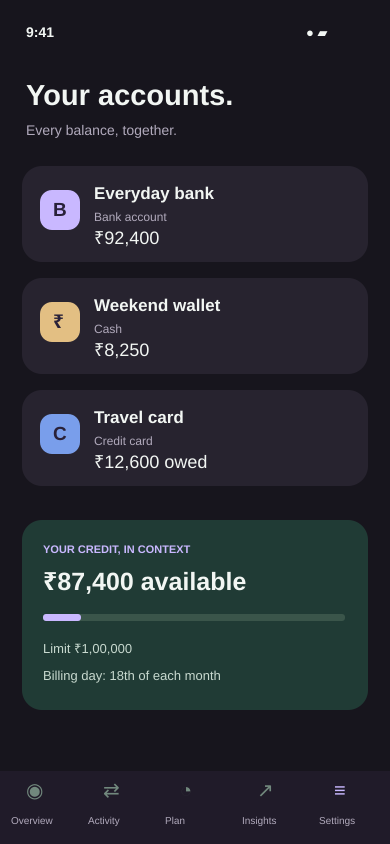
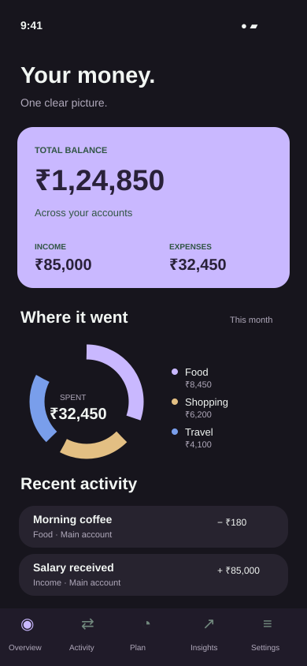

It stays with you.
Your financial records live on your iPhone. No Koinmi account. No automatic ledger upload.
FROM THE DIGITAL GARAGE / RAVZZY.COM
All your accounts. Everyday expenses. Bigger dreams.
A calmer way to see where you stand.



Illustrative app previews · sample data · final screens may differ
02 / THE EVERYDAY, MADE CLEARER.
From your morning chai to your next big adventure, give every rupee a little context.
Illustrative preview · sample data
03 / YOUR MONEY. YOUR RHYTHM.
No Koinmi login. No bank credentials. No automatic upload of your financial ledger to our servers. Record your money on your terms.
The free version uses Google advertising and consent services, which process advertising, device and diagnostic data separately. Your ledger isn’t supplied to the ad service. Manual exports are not encrypted. Keep a backup: deleting the app can delete local records.
Read the privacy policySMALL COINS. BIG POSSIBILITIES.
A little less guessing.
A little more living.
We’re getting ready for the App Store. Explore Koinmi and get in touch below.
PRIVACY / BUILT ON TRUST
Personal finance should feel personal.
Here’s exactly how your information is handled.
Your financial records live on your iPhone. No Koinmi account. No automatic ledger upload.
Export a backup or contact support when you choose. Keep exports safe: they aren’t encrypted.
Ads use Google services separately from your ledger. Optional lifetime ad removal is handled by Apple.
This policy applies to the Koinmi iOS app published by Ravzzy and to support provided through the contact address below. Effective date: 15 November 2026.
Koinmi’s current app stores your financial records on your device. It does not require a Koinmi account or automatically send your ledger to the developer. It has no bank connection or automatic ledger sync. The free version integrates Google AdMob and Google User Messaging Platform for advertising and privacy choices.
The app stores the information you enter: account names and types, opening balances, credit limits and billing days; debit-card and UPI nicknames and their bank links; transactions, dates, amounts, categories, notes and payer/payee details; budgets, goals and currency preferences.
The ledger is stored in the app’s private Application Support area. Appearance preferences are stored using iOS preferences. Account and payment-method names are labels; the app does not need bank credentials, card numbers, PINs or security codes.
The app does not automatically transmit your financial records to Ravzzy. It does not ask for access to your contacts, location, photos or banking accounts for its current tracking features. Advertising and consent services use the network separately from your financial ledger.
If you email support, we receive your email address, message and any attachments you choose to send. These are handled to respond to your request, troubleshoot the issue and maintain support records. Our email provider also processes those communications. Do not include credentials or unredacted financial data.
You choose whether to export JSON backups, export CSV transactions, or share a report. Exports are readable files and are not password-encrypted by Koinmi. The destination you select may store or sync them outside your device, including to iCloud or another service.
Importing a backup reads the selected file or pasted text into the app and replaces the ledger after confirmation. No server upload is needed. The app does not automatically read your clipboard; text import is initiated by you.
Once you send or save a file to another app, provider or person, their storage and privacy practices apply. Copies outside Koinmi are not removed when you delete records inside the app.
The ledger uses iOS file protection and atomic file writes. It is marked excluded from automatic system backups. The app can optionally require Face ID, Touch ID or the device passcode to unlock. Apple handles authentication; Koinmi receives only the result and does not access facial or fingerprint data. The app also covers its content while inactive. This lock does not encrypt manual exports.
No storage mechanism offers absolute security. Protect your device with its available security features and keep manual backups in a location you trust. Deleting Koinmi, losing the device or losing its storage can permanently lose your ledger without a separate export.
Theme preferences and operating-system-managed information may follow iOS backup behaviour separately from the excluded financial ledger.
You can view and edit your records, export a JSON or CSV copy, and delete financial records using the app’s Settings. Some individual account and category deletions are restricted to protect transaction references or built-in items; the financial reset option clears the ledger.
There is no developer-hosted Koinmi account to delete. We cannot recover a ledger we never received. Manage exported copies separately in Files, cloud storage, email and any other destination you selected.
Support emails are retained as needed to handle the request and related support or legal obligations. Contact us to request deletion of support correspondence; we will review the request and explain any information we need to retain.
The free version uses Google AdMob to show a native advertisement. Koinmi does not supply account names, balances, transactions, notes, payees, budgets, goals or financial reports to the ad service.
Google’s advertising SDK may process device or app identifiers, IP-derived approximate location, advertising interactions, diagnostics and performance data. Our integration requests non-personalised ads. Non-personalised does not mean no data is processed. Google’s consent platform manages applicable choices before ad requests are allowed.
Where required, use Settings → Advertising privacy → Manage advertising privacy choices to review your selections. Advertising may be unavailable if consent setup, network access or ad serving is unavailable; the financial features remain usable. This integration does not request Apple tracking permission or authorise access to IDFA.
Read Google’s Privacy Policy and how Google uses information from partner apps. Support and privacy webpages do not embed the app’s advertising SDK.
iOS, the App Store and Apple’s diagnostic services operate under Apple’s policies and your device settings. An iOS permission prompt, file picker or share sheet does not itself mean that your ledger is being sent to the developer.
Opening a support or privacy link visits a website outside the financial ledger. Website hosting and delivery providers may process ordinary connection information such as IP address, browser details and request logs to deliver and secure the page. These pages contain no added advertising or analytics scripts and no external font requests.
Email, website delivery, operating-system diagnostics and any external service you choose are distinct from Koinmi’s on-device storage. This policy does not override those providers’ own policies.
If Koinmi’s features or data handling change, this policy will be updated and the effective date revised. New data-handling features, such as automatic ledger sync, would require updated disclosures before being introduced.
For privacy questions or support, contact Ravzzy at ravzzyytube+koinmi@gmail.com.
Apple processes the optional one-time purchase using your Apple account. Koinmi does not receive or store your payment card details. StoreKit verifies purchase status and restores eligible purchases. Restoration does not restore financial records.
While verified lifetime ad removal is active, Koinmi stops requesting and displaying advertisements. On future launches, it skips advertising and consent SDK initialization for that purchase. Purchasing does not erase information previously processed by advertising services. Refunds and revocations can change entitlement when Apple delivers an update.
This supplied product page does not add analytics, advertising tags, cookies, or third-party scripts. Images, styles and JavaScript are served with the page. Hosting and network providers may process request data under their own policies. If you add your main website’s analytics or other services later, update this notice to reflect them.
SUPPORT / WITH A HUMAN TOUCH
Something on your mind? We’re one email away.
Questions, feedback or an unexpected hiccup.
Tell us what’s happening. We’re listening.
Include your app version, iPhone model, iOS version and the steps that led to the issue. Redacted screenshots help, too.
Please don’t send bank credentials, card numbers or unredacted backups.
Export a JSON backup first, then import it on your new device. Restore Purchases recovers eligible ad removal, not your financial records.
Your data, explainedA FEW THINGS TO KNOW
No. Koinmi tracks the records you enter or import. It doesn’t fetch bank balances or initiate payments. Debit-card and UPI entries identify the linked bank account in your ledger.
Core financial tracking uses local data. Advertising, consent, initial purchases and purchase restoration use network services. A verified lifetime purchase can be recognised using StoreKit’s cached transaction information.
Export your ledger and import it on the new device. There’s no automatic ledger sync. Eligible lifetime ad removal can be restored using the Apple account that purchased it; this doesn’t restore financial records.
Set a billing day and credit limit for each card. The app uses your recorded transactions to show its cycle and available credit. It isn’t a bank statement, payment service or interest calculator.